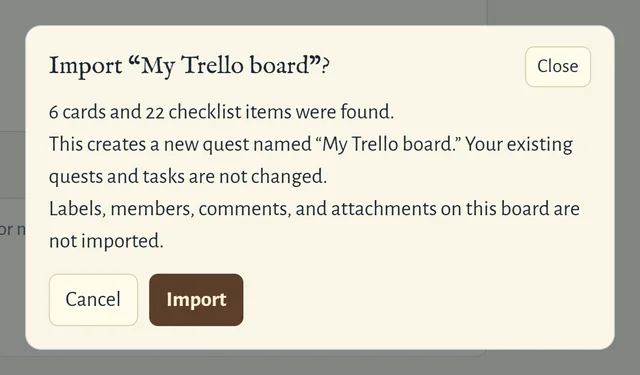

You can bring existing projects into Sidequest from Trello or Todoist. Open Options and choose Import from Trello or Import from Todoist. Each import creates a new quest, so importing the same file twice creates two quests. You’ll see a summary of what will be imported before anything is saved.
Trello
Export your board as a JSON file from Trello, then select it in Sidequest. Cards become tasks, with descriptions carried over as notes and due dates preserved. Checklist items become steps, including their completion status. Cards without due dates go into the Backlog. Archived cards are skipped. Labels, members, comments, attachments, and custom fields aren’t imported.

Todoist
Export a project as a CSV file from Todoist, then select it in Sidequest. Tasks come across with their due dates and notes. Todoist doesn’t include completed tasks in its exports, so those won’t appear in Sidequest. Also, exports are capped at 300 tasks, so a file with exactly 300 tasks may be incomplete. Subtasks become regular tasks, and labels aren’t imported. Relative dates such as “today,” “tomorrow,” and “in 3 days” are converted to calendar dates. Repeating tasks are imported without a schedule.